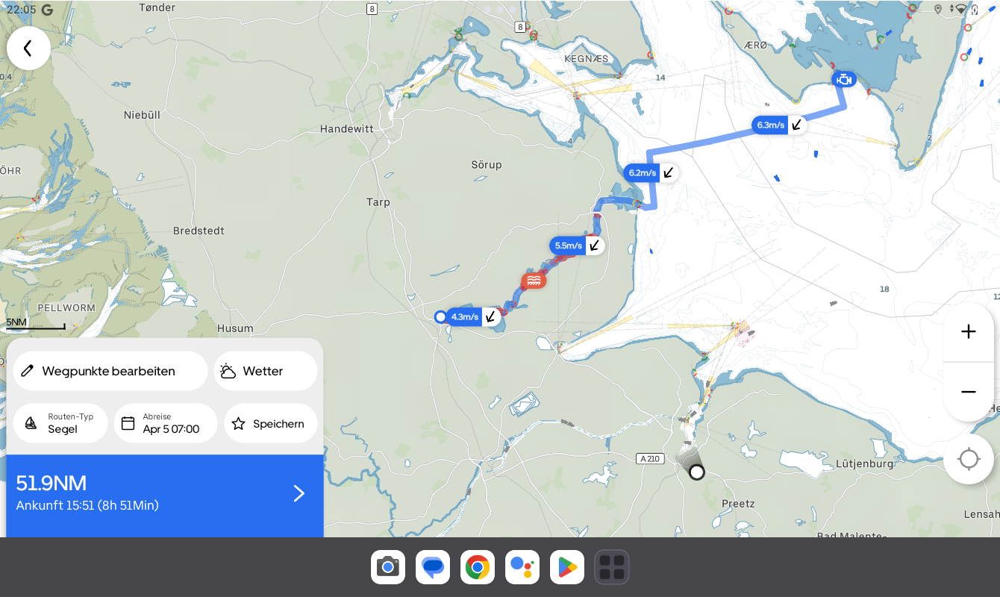

All Articles
Segelreporter Reviews Orca
April 17, 2025 • 7 min read
"Groundbreaking" almost falls short.


This article was originally written by Stephan Boden in German and published in Segelreporter on April 11th, 2025. The translation and following publication have been approved by the original author.
Boot Düsseldorf, 2012: I stood at the booth of a large provider of chartplotters and marine electronics. At that time, I navigated exclusively with an app and tablet, so an interesting conversation took place with one of the staff members. Since I was often laughed at or criticized for my navigation style, I wanted to know what significant differences there were between a chartplotter and my tablet navigation. For reference: back then, almost no chartplotter had a touchscreen.
After a very constructive conversation, the staff member made one valid point: in rough weather at sea, with waves crashing over the deck and cold temperatures, it’s certainly better and more reliable to trust a waterproof, powered plotter, whose hardware is specifically designed for such situations. "You wouldn’t want to round Cape Horn with a tablet," he said – and he was right.
A String of Questions
About a year later, I conducted a training series for the German Offshore Yacht Association (DHH) in Hamburg on the topic of "Navigation via App with Tablet and Smartphone." Before diving into the depths of the possibilities, we first discussed the hardware. One participant argued that apps were only useful for trip planning in the harbor. He had tested it and found that the GPS fix only worked in the harbor area. Once he left the harbor entrance, the position disappeared.
I immediately understood the problem: he had an iPad without a SIM card slot. While navigation doesn’t require a SIM, only models with this slot have an embedded GPS. As long as he had a Wi-Fi connection in the harbor, the tablet could determine its position, but without the internet, it couldn't.
This brings us to the main problem with tablet or smartphone navigation: the hardware. The common apps were all capable of reliable navigation, route planning, and plotting, but the tablets and phones were the weakest link in the chain. These devices are sensitive to water ingress, usually have only a few hours of battery life, are hard to read in sunlight, and shut down when they overheat. You inevitably face a whole string of questions when navigating via app: How and where do I mount the device? How do I protect it? Where does the tablet get its power?
So, mounts were installed, cables run, and expensive protective cases purchased, only to discover that when the USB charger was plugged in, the waterproofing was compromised. It's always the same: something is always wrong.


Tablet navigation in 2013. A whole host of small problems. Photo: Stephan Boden
From "Something is Always Wrong" to "Something Was Always Wrong"
After spending the last four years mostly in inland waters, where you could navigate with a Thermomix, I had to deal with the topic of app navigation again this year, as the boat was moved to the Baltic Sea. After some disappointments (I wrote about this), I came across a new app: Orca.
Orca caught my attention not only because it’s a new app, but also because the Norwegian provider developed a matching hardware solution, including the "Orca Core," an external GPS receiver and compass that can do much more. More on that later. Orca also offers a tablet, the "Orca Display," which has simply eliminated the common weaknesses of such devices. More on that too.
Impressed by this approach, I downloaded the app to check it out. And what can I say? After spending no more than ten minutes with the Orca App, I hit "subscribe" and bought a yearly subscription for offline maps. Sometimes, conviction can happen very quickly. And it wasn't because the subscription costs only 49 euros.
Finally, Someone Approaching It Differently and More Innovatively
What makes Orca so special? Someone has truly rethought the concept of navigation at sea and approached it completely differently during development.
First of all, I really like the map display and the way it’s presented. The day and red night modes are clearly displayed, the menu is simple, intuitive, and not overloaded. Relevant elements like buoys are shown large when approaching, and lighthouses are marked with identifiers. It immediately feels familiar, like paper nautical charts. This works well because, even from a greater distance, you can understand what’s going on – for example, when the tablet is mounted in the companionway and you’re sitting at the helm.


Clear map image with sail routing. Photo: Screenshot by Stephan Bodens of the Orca App.
Routes can be created quickly and intuitively, and the automatic route calculation works not only excellently, but also offers a very enticing feature for sailors: weather routing. When you create a route and input the relevant boat data, such as draft and clearance height, Orca calculates the route using integrated wind data from various weather services. This means the app doesn’t just draw a straight line from point A to point B, but calculates the course according to the wind and shows potential tacking routes.
In the example in the image, I calculated a course from my new home harbor in Schleswig to the Schlei, where the wind comes from directly ahead. The Orca app calculates how far the distance can be sailed based on the wind direction and strength, and even recommends short sections where the motor should be used at the narrowest parts of the Schlei. Now that’s an app that really thinks ahead. I’ve been testing the app for several weeks now, and I feel very comfortable with it. This year, I will navigate exclusively with Orca. They’re getting a lot right.
For those who want to be precise, the polar data for the boat can even be entered or fetched from a database, which is then included in the optimal sailing route calculation.
It’s also nice that you can always see the wind direction and strength along the route. This means you always know what’s coming up, can prepare for reefing, or even put on your oilskins in advance.
During my first test, I noticed that the Orca app also shows ship traffic. According to Orca, they are constantly developing and entering into partnerships to integrate external data into the app. In this case, the AIS data from Marine Traffic is embedded, which then shows up on the nautical chart – without needing an AIS receiver on board.

Orca at night. Great for use in the dark. Photo: Screenshot of the Orca App by Stephan Bodens.
Since I have a Marine Traffic paid account, I can also view extended data on ships, such as images, tracks, and more, by tapping on them in the Orca app.
The same applies to the harbors displayed in the app. Their data, including user reviews, is integrated from the Navily database. I think this is smart because why not use existing data that’s proven to be useful?
When you start navigation, there’s a feature called "3D Course." When you select this view, the map shifts to a three-dimensional perspective, similar to what you might see with car navigation systems. The map tilts, and the displayed elements, like buoys, are shown in 3D. This works exceptionally well. For those who prefer the classic view, you can still choose the north-up or course view.
Ship traffic is only shown as long as an internet connection is available, but this is usually the case in coastal areas with stable mobile networks. In most cases, it works. For offshore navigation, there are either internet solutions or the hardware Orca offers around the app, which I will now discuss.
Heart, Brain, and Eyes
If you consider the app the heart of Orca, it can be further expanded with a brain and eyes. Because – and this is completely new – with the "Orca Core," Orca transforms from an app into an integrated system. The Core is a GPS receiver with a compass that supports Wi-Fi, Bluetooth, Ethernet, and NMEA 2k interfaces. This allows you to connect existing systems with sensors and transducers, like sounders, loggers, wind, AIS, etc., to the Orca system and use them in the app.


Orca Core delivers advanced built-in sensors and connects Orca to your onboard systems.
The tablet then becomes not just a plotter, but a multifunctional display with instruments. Radar overlays are possible, and even control of a compatible autopilot via the app. The Core connects to the tablet via Wi-Fi, and all the data is available in the app, fully configurable and easy to read.


Problem solver: Orca Tablet with the mount that charges inductively. Photo: Orca.
Now that we've covered the heart and brain, there are still the eyes. And Orca has that covered as well: The Orca Display, now in version 2, is an Android-based tablet optimized for marine use. And the Orca developers have done excellent work here because all the previous hardware weaknesses have been eliminated: The 10-inch tablet is water-resistant, offers full readability even in bright sunlight, doesn’t shut down when it gets warm, and, as the cherry on top, comes with a mount that inductively charges the tablet when it’s docked. All the previous counterarguments are gone when a manufacturer thinks about the problem from the ground up.
Conclusion
Orca clearly thought about navigation starting from the cockpit or helm, not from the programming department. Until now, you always had to improvise and create your own setup to navigate via app and tablet, or smartphone. Orca has created a complete solution that’s not only suitable for small cruisers but will likely also find its place on yachts larger than 35 feet. It makes perfect sense because every sailor already uses apps for navigation or route planning. So, it’s only logical to integrate mobile devices into professional navigation.
Over the years, the offerings from well-known providers have continuously improved, sometimes in small, sometimes in larger steps, but occasionally even in ways that didn’t quite improve things. Orca, however, entered the market with a completely new approach and, in my opinion, immediately took pole position, both with their app and hardware. Orca appeared on the market and entered through a new door.
Reliable, reasonably priced, and secure navigation is now possible without expensive marine electronics that need to be installed. Orca can do everything an MFD can, what instruments can do, and what plotters can do – all without needing to drill holes in the hull, which may no longer fit when a new display arrives in five years. Marine electronics manufacturers and even the navigation app developers haven’t really moved forward in recent years. That's why I consider the Orca system to be quite revolutionary. And sailors should be happy that there’s finally good news where the word "Orca" appears.
Orca isn’t groundbreaking; Orca is nearly a revolution. Whether it’s just the app or the entire system. I’m excited by such innovation, and that's why I made the switch. Cape Horn can come, even though I currently lack the appropriate boat.
Offline maps in the app cost 49 euros per year for full coverage, the Core is 549 euros, and the Display costs 999 euros. A complete description of all system functions will follow in the coming weeks.

Orca is super easy to use. Photo: Screenshot of the Orca App by Stephan Bodens.
About the author
Stephan Boden is a freelance author, book author, filmmaker, and journalist. He loves boats, especially small cruisers. After months of sailing the Baltic Sea with his 18-foot Varianta "Digger," he now lives with his wife and child in Kiel and sails the Schlei with "Gisela," a beautiful, 70-year-old restored 20-foot jib cruiser. Stephan is a media professional through and through, writing, filming, photographing, editing, animating, designing graphics, and filling social media channels with content.